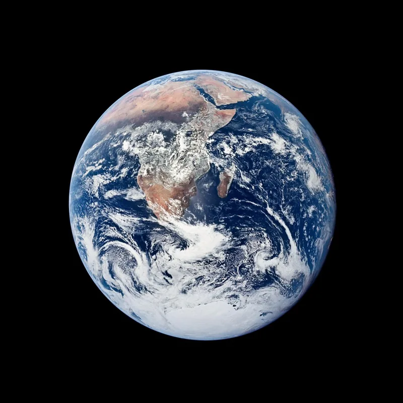

Buzun altında
başka bir dünya.
Europa’nın çatlak buz kabuğunun altında, küresel bir okyanus olduğu düşünülüyor. Yaşam için gerekli koşullar orada olabilir mi?
SAMANYOLU’NDAN BİR MERHABA
Uçsuz bucaksız evrende küçük bir mahalle.
Sekiz gezegen, buzlu
dünyalar ve bizim hikâyemiz.

4,6 MİLYAR YILLIK BİR HİKÂYE.
HENÜZ BAŞINDAYIZ.
01 / KOZMİK KOREOGRAFİ
ETKİLEŞİMLİ ATLAS
Bir dünya seç. Yörüngesini izle.
Sonra, onun çevresindeki
dünyaları keşfet.
Bir keşif modeli, canlı gökyüzü haritası değil. Yörüngeler ve boyutlar şematik; dolanım süreleri gerçek oranlıdır. Başlangıç konumları temsilidir. Uydu görünümünde zaman yavaşlatılır. Küreler sanatsal betimlemelerdir.
02 / BİR PERSPEKTİF MESELESİ
ÖLÇEK
Dünya’nın çapı bir birim olsaydı…
Jüpiter’e bakınca fikrin
değişebilir.
Dünya’yı yan yana yaklaşık 109 kez diz.
İşte bir Güneş.
03 / EVRENİN HIZ SINIRI
BİR DENEY YAPALIMGüneş’e baktığında, onu yaklaşık 8 dakika önceki hâliyle görürsün. Şimdi bir ışık parçacığını yola çıkar.
Bir saniyede Dünya’nın çevresini
yaklaşık 7,5 kez dolaşacak
kadar hızlı.
04 / YAKINDAN BAKINCA
KOZMİK NOTLAR
Buzun altında okyanuslar.
Gökyüzünden yağan metan.
Tanıdık
olanın çok ötesinde.
Europa’nın çatlak buz kabuğunun altında, küresel bir okyanus olduğu düşünülüyor. Yaşam için gerekli koşullar orada olabilir mi?
Titan’ın nehirleri ve gölleri sıvı metan ve etanla dolu. Kalın atmosferinin altında, bambaşka bir sıvı döngüsü işliyor.
Plüton’un kalp şeklindeki bölgesi, azot buzullarıyla dolu. Charon ile birlikte ortak kütle merkezlerinin çevresinde dans ediyorlar.
Merkür, Venüs, Dünya ve Mars. Katı yüzeyleri, metalik çekirdekleri var; küçük ve yoğundurlar. Güneş’e en yakın dört gezegendir.
Jüpiter ve Satürn büyük ölçüde hidrojen ve helyumdan oluşur. Uranüs ve Neptün ise su, amonyak ve metan gibi daha ağır bileşiklerce zengin iç yapıları nedeniyle buz devleri olarak sınıflandırılır.
Ceres, Plüton, Haumea, Makemake ve Eris, IAU tarafından tanınan beş cüce gezegendir. Kendi kütleçekimleriyle yaklaşık yuvarlaklaşırlar ama yörüngelerinin çevresini temizlememişlerdir. Ceres asteroit kuşağında; diğerleri Neptün’ün ötesindedir. Kuiper Kuşağı, kuyruklu yıldızlar ve varsayılan Oort Bulutu, sistemimizin uzak sınırlarını oluşturur.
Çekirdekte yaklaşık 15 milyon °C’de gerçekleşen füzyon enerji üretir. Bu enerji ışınım ve konveksiyon bölgelerinden geçerek yaklaşık 5.500 °C’lik fotosfere ulaşır. Manyetik etkinlik, güneş lekeleri ve yaklaşık 11 yıllık döngüyle değişir. Güneş rüzgârının Dünya’nın manyetik alanıyla etkileşimi kutup ışıklarını oluşturur.
05 / MERAKIN İZİNDE
KEŞİF GÜNLÜĞÜKüçük adımlarımızın
Güneş Sistemi’ndeki uzun yankısı.
Apollo 11 ile ilk insanlar Ay’a indi. Uzakta görünen bir dünya, ayak izlerimizi taşıyan bir yere dönüştü.
Voyager 1 ve 2 yola çıktı. Voyager 2, Uranüs ve Neptün’ü yakından ziyaret eden tek araç olmayı sürdürüyor.
Cassini’nin taşıdığı Huygens, Titan’a indi. Dış Güneş Sistemi’ndeki bir dünyaya ilk yumuşak iniş gerçekleşti.
New Horizons, Plüton’un yanından geçti. Birkaç pikselden ibaret dünya, dağları ve buzulları olan bir yere dönüştü.
Keşif sürüyor: Juno (2016), Perseverance ve Parker’ın korona geçişi (2021), DART (2022), Europa Clipper’ın fırlatılışı (2024).
06 / BİLDİĞİMİZİN ÖTESİ
UZAYDAN KARTPOSTALLAR
Güneş de bir zamanlar böyle bir bulutta doğdu.
Gördüğün şey,
başka hikâyelerin başlangıcı.
Karina Bulutsusu · ≈ 7.600 ışık yılı
Gaz ve tozun içinde yeni
yıldızlar doğuyor.
Gizemli Dağ · ≈ 3 ışık yılı yüksekliğinde
Andromeda · ≈ 2,5 milyon ışık yılı uzakta
BU HİKÂYENİN BİR PARÇASISIN.
Vücudundaki karbon, oksijen ve demir, yıldızların yaşamında ve ölümünde oluştu. Gökyüzüne baktığında biraz da kendi geçmişini görüyorsun.
Yeniden bak